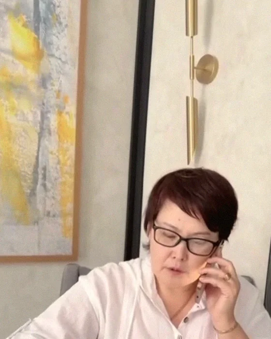
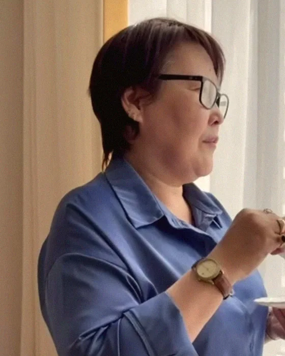

Рана затянулась. Но внутри всё ещё больно.
Вам говорят: «Это было давно». Вы и сами пытались забыть, простить, отпустить. Но знакомая интонация или одно слово возвращают туда, где вы снова чувствуете себя беспомощно.

Астана · очно и онлайн · 18 лет практики
Тажигуль Момынова, сущностный психолог. 18 лет практики, три авторские методики. Первая встреча - диагностика, 60-90 минут.
Сущностный психологКлинический психологПсихолог-аналитикЭзотерик
Индивидуально и конфиденциально. На русском и казахском, онлайн - из любой точки мира.
Разборы и ответы в Instagram →Вы работаете, заботитесь о близких, решаете чужие вопросы. А вечером остаётесь наедине с тем, что никому не можете объяснить.
Вам говорят: «Это было давно». Вы и сами пытались забыть, простить, отпустить. Но знакомая интонация или одно слово возвращают туда, где вы снова чувствуете себя беспомощно.
Вы ложитесь спать и продолжаете проживать разговоры, которых уже не изменить. Утром нужно вставать, улыбаться, работать. Только отдохнуть за ночь опять не получилось.
Вы помните, кому позвонить, что купить, кого поддержать. Но всё реже понимаете, чего хочется вам. Даже свободное время хочется просто переждать в тишине.
Необязательно ждать, пока сил совсем не останется, чтобы обратиться за помощью.
Записаться на диагностикуМожно начать с одной фразы. Нажмите на ту, что ближе, - она откроется в WhatsApp, и Тажигуль ответит сама.
Или своими словами: +7 747 668 64 75

Вы многое понимаете. Но в нужный момент опять соглашаетесь, терпите, замолкаете или уходите раньше, чем вас успеют отвергнуть.
В работе мы исследуем, как складывается этот сценарий: какие чувства, убеждения, отношения и события вашей истории с ним связаны.
Что вы продолжаете терпеть только потому, что давно к этому привыкли?
Обсудить свой сценарийЯ - Тажигуль Момынова, сущностный психолог, клинический психолог, психолог-аналитик и эзотерик. Более 18 лет практики. Автор и разработчик трёх авторских методик.
Каждая встреча начинается с вашей истории. С того, что происходит именно с вами.

Возможно, вы ощущаете отчуждение от себя, внутреннее давление или переживания, которые связываете с сущностным влиянием. Вы пытаетесь подобрать слова, но боитесь, что вас неправильно поймут.
В моём подходе есть место разговору об эзотерическом опыте и значении, которое он имеет для человека. Мы обсуждаем ваши ощущения вместе с вашей историей, эмоциональным состоянием и обстоятельствами жизни.
Можно рассказать о том, что вы переживаете, даже если вы пока не знаете, как это назвать.
Три авторские методики
Работа с внутренними конфликтами, привычными реакциями и повторяющимися жизненными сценариями. Как человек относится к себе, принимает решения и выстраивает отношения.
Обсудить в WhatsAppРабота в рамках моего авторского эзотерического подхода: внутренние ограничения, переживания и опыт, который человек связывает с влияниями. Содержание и границы работы согласовываются индивидуально.
Обсудить в WhatsAppАвторская работа с переживанием глубокой опустошённости, потери сил и внутренней опоры.
СГИЛ - название моей авторской концепции, а не общепринятый медицинский диагноз.
Обсудить в WhatsAppМетодики формировались на основе обучения, личного опыта и многолетней практики. Возможность их применения обсуждается после первой встречи.
Записаться на диагностикуСтоимость
60-90 минут. Обсудим, что беспокоит, как давно это началось, что вы уже пробовали и чего ждёте от работы. Очно в Астане или онлайн.
Рассрочка. Курс сессий можно оплачивать частями - условия обсуждаются при записи.
Приём проходит по предварительной записи и полной предоплате. Стоимость и условия переноса сообщаются до оплаты. Суммы в долларах и рублях ориентировочные и уточняются по курсу на день оплаты. Курс не нужно оплачивать сразу: сначала проводится диагностика.
Первый шаг - запись в WhatsApp. Дальше - встреча и план, который обсуждаем вместе.
Напишите в WhatsApp. Согласуем время и формат: очно в Астане или онлайн.
Диагностика и консультация, 60-90 минут: что беспокоит, как давно, что уже пробовали и чего ждёте от работы.
После знакомства с вашим запросом обсудим направления, продолжительность и условия дальнейшей работы.
О своём опыте люди рассказывают сами. Здесь размещаются видеоотзывы и письменные отзывы с разрешения их авторов.
«После недели работы с вами мне стало легче. Ушло внутреннее напряжение… я стала спокойнее и наконец стала энергичной, гуляю и отдыхаю всю неделю!»
Опыт одного человека не обещает такого же результата другому. Ход и результаты работы индивидуальны.
Больше историй в InstagramПсихологическое образование, клиническая подготовка, обучение в области эзотерики и документы об авторстве методик.
Дипломы и свидетельства покажу на встрече или пришлю в WhatsApp.
Запросить в WhatsAppНе нашли ответ? Напишите - отвечает Тажигуль.
Спросить в WhatsAppДа. Индивидуальные встречи проходят через WhatsApp. Для разговора понадобится спокойное место и устойчивое соединение.
Нет. Для работы необходима личная беседа - очно или онлайн.
Сначала проводится диагностика и консультация. Дальнейший формат и условия обсуждаются после знакомства с вашим запросом.
Да. Начнём с тех слов и ощущений, которые есть у вас сейчас.
Нет. Люди приходят с разными историями и состояниями. Возможности, цели и ход работы обсуждаются индивидуально.
Запись
Не нужно заранее знать причину своего состояния или выбирать методику. Начните с разговора о том, что беспокоит вас сейчас.